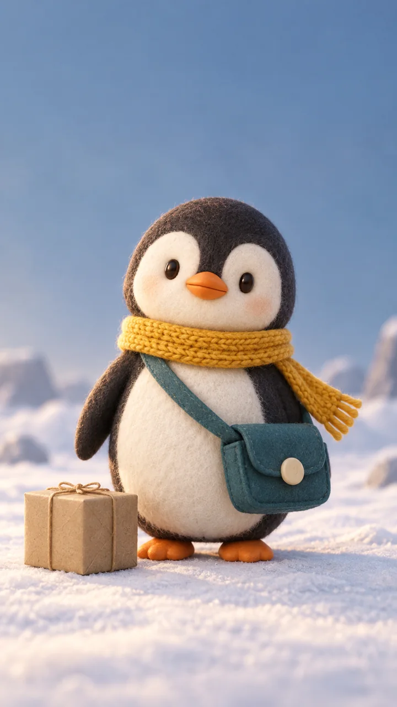
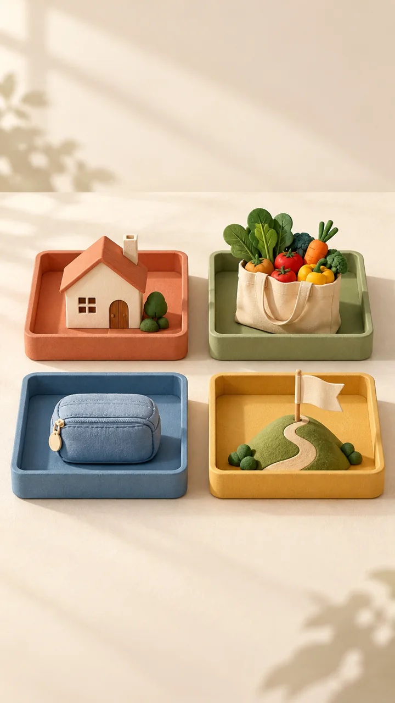
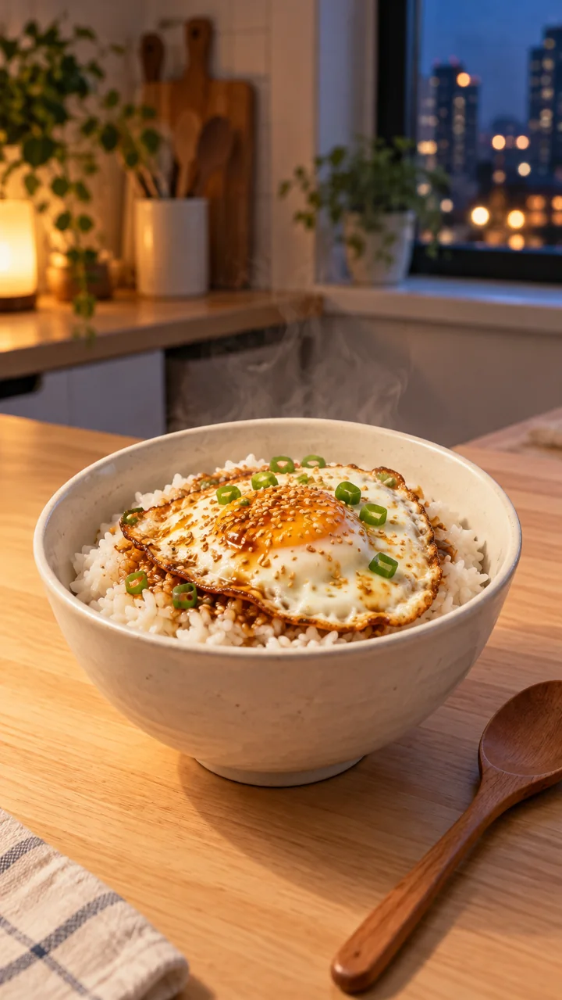

가상 채널 「자취생 10분 생존법」의 대표작은 ② 월급날 네 칸 해설입니다. ①은 자취 요리, ③은 별도 「상상극장」 연습으로 제작 방식을 비교합니다. 세 가지를 한 영상에 섞지 않고 고른 한 편을 계속 이어 만드세요.
아래 대본은 창작 예입니다. 대표 샘플은 36초로 배치했고, 30초·45초 도구는 같은 소재를 줄이거나 늘리는 연습입니다. 실제 음성을 넣을 때는 낭독한 길이에 맞춰 장면을 나눕니다.
① 간장 계란밥 · 퇴근 후 한 그릇, 간장 계란밥
시청자 · 퇴근 후 집에서 한 끼를 만들 자취생
① 직접 촬영용 입력을 복사하려면
가상 채널: 자취생 10분 생존법
유형: 직접 촬영 + AI 편집
주제: 퇴근 후 한 그릇, 간장 계란밥
직접 보여 줄 순서: 완성 그릇 → 익힌 밥 준비 → 달걀을 익혀 올림 → 간장 조금씩 → 한 숟갈
이 순서에 맞춰 훅 3안, 읽을 말, 촬영 목록, 짧은 자막, 제목·설명을 제안해 줘.
조리 시간·칼로리·재료비·영양 효과를 지어내지 마.
실제로 촬영한 동작과 내 낭독 길이에 맞춰 내가 고칠 거야.
훅 3안
퇴근했는데 뭘 먹죠?
오늘 저녁은 간장 계란밥 한 그릇
밥 위에 익힌 달걀부터 올려요
대본과 장면 목록
장면
읽을 말
짧은 자막
완성 그릇을 먼저 보여 줌
퇴근하고 복잡하게 만들기 싫은 날, 오늘은 간장 계란밥이에요.
오늘 저녁 한 그릇
익힌 밥·달걀·간장 준비 → 달걀 익히기 → 밥 위에 올리기
익힌 밥을 담고, 달걀은 속까지 익혀 올려요. 간장은 조금씩 넣어 내 입맛에 맞춰요.
익힌 달걀을 올려요
한 숟갈 떠서 완성 모습으로 마무리
집에 파나 깨가 있으면 더해요. 이제 한 숟갈 떠 볼까요?
내 입맛에 맞춰요
설명 초안 · 도윤의 가상 자취 요리. 익힌 밥에 충분히 익힌 달걀을 올리고 간장을 조금씩 더하는 과정을 직접 촬영합니다. 조리 시간·칼로리·재료비를 약속하지 않습니다. 실제 게시 설명에는 내가 촬영·녹음한 내용과 사용 음악의 필수 표시를 적습니다.
② 월급날 네 칸 · 월급날 10분, 돈을 네 칸으로 나누기
시청자 · 월급을 받기 시작한 자취생
훅 3안
월급은 들어왔는데, 어디에 쓸까요?
월급날, 돈을 네 칸으로 나눠요
메모에 네 칸만 그려 보세요
대본과 장면 목록
장면
읽을 말
짧은 자막
네 칸 전체와 용도 이름을 먼저 보여 줌
월급은 들어왔는데, 어디에 쓸까요? 월세, 생활비, 비상금, 목표. 메모에 네 칸을 그려 봐요.
월세 · 생활비 · 비상금 · 목표
월세·생활비 칸 → 비상금·목표 칸 차례로 강조
월세처럼 나갈 돈과 평소 쓸 생활비를 적어요. 예상 못 한 지출은 비상금, 모으고 싶은 것은 목표 칸에 적어요.
나갈 돈과 모을 돈을 나눠요
내가 채울 빈 메모 → 네 가지 용도 다시 보기
새 통장을 만들 필요는 없어요. 지금 쓰는 메모에 용도부터 적어 보세요. 금액은 내 상황을 보고 정해요.
내 메모에 쓸 곳부터 적어요
설명 초안 · 가상 채널 「자취생 10분 생존법」의 생활 메모 예시. 월세·생활비·비상금·목표로 돈의 용도를 적어 봅니다. 네 칸은 설명용 분류이고, 10분은 메모에 써 볼 활동 시간입니다. 통장 개설·배분 비율·절약액·수익을 권하거나 보장하지 않습니다. 실제 게시 설명에는 본인 카드·음성의 출처와 사용 음악의 필수 표시를 적습니다.
③ 펭귄 택배기사 · 펭귄 택배기사의 하루
시청자 · 작은 캐릭터의 도전과 반전을 즐기는 시청자
훅 3안
나보다 큰 소포, 어떻게 배달하지?
첫 배달부터 나보다 큰 소포!
들 수 없다면 방법을 바꿔 볼까?
대본과 장면 목록
장면
읽을 말
짧은 자막
소포 앞에서 멈춤
오늘도 배달 출발! 그런데 소포가 제 몸만 해요.
나보다 큰 소포
소포를 한 번 들어 보려다 멈춤
번쩍 들려다 멈칫. 이건 혼자 들기 어렵겠어요.
잠깐, 너무 큰데?
소포를 실은 썰매를 끌고 감
들지 말고 끌어 볼까요? 썰매에 싣고 눈길을 걸어요.
들지 말고 끌자
현관에 소포를 내려놓음
현관 앞에 도착했어요. 첫 배달, 완료!
첫 배달 완료
설명 초안 · 오리지널 펭귄 택배기사의 가상 상상 이야기. 큰 소포를 썰매에 싣고 배달합니다. 기준 그림과 키프레임은 AI 생성 정지 이미지이며 생성 클립을 실행한 결과는 아닙니다. 완성 영상의 실제 사용 음성·음악·생성 방식과 필요한 표시를 설명에 적으세요.
대괄호를 내 재료로 바꾸고 서비스의 입력창에 붙여 넣으세요. 첫 대화에는 사실·장면·목표를 함께 줍니다. 같은 결과를 고칠 때는 그 대화에서 한 요소만 바꿉니다. 프롬프트의 목표 길이는 낭독·편집으로 확인합니다.
직접 촬영 대본
복사해서 쓰기
시청자: 첫 월급을 받은 자취생
목표: 돈의 용도를 네 칸에 적는 45초 얼굴 없는 해설
직접 만든 예: 월세·생활비·비상금·목표라는 네 칸 메모. 금액·비율은 정하지 않는다.
보여 줄 장면: 네 칸 전체 / 월세와 생활비 / 비상금과 목표 / 내 메모 완성
위 사실과 장면만 써 주세요. 없는 성능·제품명·통계는 넣지 마세요.
출력: 장면 번호 | 말할 문장 | 찍을 장면 | 화면 자막 | 확인 근거
첫 문장은 결과를 바로 말하고 끝에는 시청자가 할 행동을 넣어 주세요.
45초는 목표입니다. 정확한 길이는 제가 읽고 재겠습니다.
나쁜 요청: “잘되는 쇼츠 써 줘”. 좋은 요청: 직접 확인한 사실·찍을 장면·표 형식을 함께 줍니다.
시청자: 첫 월급을 받은 자취생
목표: 45~60초 얼굴 없는 해설 쇼츠
직접 만든 예: 월세·생활비·비상금·목표 네 칸 메모
전달할 내용: 돈의 용도를 먼저 적어 보자. 통장 개설·금액·비율·수익은 권하지 않는다.
첫 문장 → 비교 예 → 고치는 과정 → 오늘 할 일 순으로 써 주세요.
출력: 말 | 보여 줄 그림/글자 | 화면 자막. 실제 서비스 인식 결과라고 쓰지 마세요.
새 통계·실존 인물·브랜드·출처를 만들지 마세요. 길이는 제가 낭독해 확인합니다.
나쁜 요청: 기사만 읽고 아무 장면 붙이기. 좋은 요청: 내가 만든 비교 예와 고치는 과정을 함께 설계합니다.
선택한 유형: AI 영상 생성.
가상 이야기: 펭귄 택배기사가 큰 소포를 썰매로 배달한다.
아래 네 샷과 해설을 유지하고 제목·설명 초안을 써 줘.
샷 번호 | 장면 | 읽을 말 | 자막:
01 | 소포 앞에서 멈춤 | 오늘도 배달 출발! 그런데 소포가 제 몸만 해요. | 나보다 큰 소포
02 | 소포를 한 번 들어 보려다 멈춤 | 번쩍 들려다 멈칫. 이건 혼자 들기 어렵겠어요. | 잠깐, 너무 큰데?
03 | 소포를 실은 썰매를 끌고 감 | 들지 말고 끌어 볼까요? 썰매에 싣고 눈길을 걸어요. | 들지 말고 끌자
04 | 현관에 소포를 내려놓음 | 현관 앞에 도착했어요. 첫 배달, 완료! | 첫 배달 완료
먹색 둥근 몸·크림색 얼굴·주황 부리·노란 목도리·청록 가방·눈길을 유지해 줘.
각 샷은 한 동작만. 실제 사건·인물·브랜드·로고는 넣지 마.
시간은 내가 낭독해 정한다. 영상이 부족하면 이야기 연결 카드를 넣을 자리도 제안해 줘.
나쁜 요청: 한 번에 긴 완성 영상. 좋은 요청: 샷마다 한 동작과 연결할 끝 자세를 정합니다.
실습 3에서 아래 읽을 말을 script.txt로 저장해요. 실습 4에서는 같은 말을 읽고, 실습 5에서는 같은 번호로 파일을 저장해요. 파일명은 저장할 이름이에요. 이 표 자체가 영상 파일은 아니에요.
샷
저장 파일
장면의 한 동작
읽을 말
자막
01
shot-01.mp4
소포 앞에서 멈춤
오늘도 배달 출발! 그런데 소포가 제 몸만 해요.
나보다 큰 소포
02
shot-02.mp4
소포를 한 번 들어 보려다 멈춤
번쩍 들려다 멈칫. 이건 혼자 들기 어렵겠어요.
잠깐, 너무 큰데?
03
shot-03.mp4
소포를 실은 썰매를 끌고 감
들지 말고 끌어 볼까요? 썰매에 싣고 눈길을 걸어요.
들지 말고 끌자
04
shot-04.mp4
현관에 소포를 내려놓음
현관 앞에 도착했어요. 첫 배달, 완료!
첫 배달 완료
연습 목표는 30~45초예요. 먼저 읽고 시간을 재세요. 샷별 8초를 고르면 4×8=32초예요. 길이가 다르면 편집에서 장면 길이·설명 카드를 조절해요. 대본 저장 → 녹음/TTS → 네 샷 생성 → 편집 순서예요.
숫자·약어 낭독
복사해서 쓰기
다음 대본을 한국어 낭독용으로 정리해 주세요.
숫자·단위·영문 약어는 뜻을 바꾸지 않고 읽는 말로 풀어 주세요.
출력: 화면에 쓸 원문 | 소리 내 읽을 문장. 사실을 새로 넣지 마세요.
예: 12.5% → 십이 점 오 퍼센트 / AI → 에이아이
[검수한 대본 붙이기]
9:16 세로 쇼츠 「펭귄 택배기사의 하루」의 기준 그림.
둥근 먹색 몸, 크림색 얼굴과 배, 작은 타원 눈, 짧은 주황 부리와 발.
노란 니트 목도리와 크림색 둥근 단추 하나가 달린 청록색 가방. 모자 없음.
작은 무지 소포와 눈 덮인 마을, 따뜻한 빛, 부드러운 펠트·클레이 질감.
전신이 보이고 위아래에 나중에 자막을 넣을 빈 공간.
글자·실존 인물·기존 캐릭터·브랜드·로고 없음.
나쁜 요청: “귀여운 펭귄”. 좋은 요청: 외형·구도·빛·빈 공간·제외할 것을 고정합니다.
Use the approved penguin reference image. Keep its round charcoal body,
cream face, orange beak and feet, mustard knitted scarf and teal satchel.
The penguin pulls a small wooden sled carrying the same plain kraft parcel once.
Medium shot, slowly tracking sideways, snowy village, warm soft light, felt/clay texture.
No cuts, no dialogue, no music, no text, no logos, no extra characters.
Target: 6 seconds, vertical 9:16; set duration and aspect ratio in the controls too.
나쁜 요청: 걷고 넘어지고 소포 들고 배달까지 한 번에. 좋은 요청: 썰매 끌기 한 동작과 천천히 따라가는 카메라입니다.
Use the approved penguin reference image and the previous shot’s final frame.
Keep the same mustard scarf, teal satchel, plain parcel, snowy village and felt/clay look.
The penguin places the parcel on the cottage doorstep once, then stops.
Medium shot, locked camera, warm soft light. Keep the parcel and flippers separate.
No cuts, no extra limbs, no dialogue, no music, no text, no logos.
Target: 6 seconds, vertical 9:16; set those values in the controls too.
나쁜 결과: 다른 색·눈·소품. 좋은 결과: 승인 참조를 다시 올리고 빛과 소품을 유지합니다.
입력: [장면 파일명·내용·길이], [확정 음성의 문장별 시작·끝]
음성 순서를 유지하며 장면 배치표를 제안해 주세요.
출력: 구간 | 음성 문장 | 장면 파일 | 자를 대기 | 남길 핵심 동작.
없는 장면은 촬영할 목록으로 남기고 실제 편집 완료처럼 답하지 마세요.
말끝·부정어·중요한 손동작은 삭제하지 마세요.
나쁜 답변: 파일을 받지 않았는데 편집 완료라고 말하기. 좋은 출력: 편집기에서 옮길 배치표와 빠진 장면 목록입니다.
아래 원문과 자동 자막을 비교해 주세요.
출력: 원문 | 잘못 적힌 단어 | 수정 제안 | 다시 들어 볼 위치.
숫자·단위·이름·부정어를 우선 확인하고, 없는 말을 만들지 마세요.
오디오는 제가 직접 듣습니다. 시간표는 임의로 만들거나 바꾸지 마세요.
원문: [검수한 대본]
자동 자막: [SRT 또는 자막 텍스트]
나쁜 결과: AI 답변만 읽고 게시. 좋은 결과: 원음을 재생해 부정어·숫자·시간을 직접 확인합니다.
내장 이미지 생성 기능으로 만든 정지 이미지 6장입니다. 펭귄 후속 장면 3장은 모두 같은 기준 그림을 참조했습니다. 움직이는 생성 영상이나 실제 요리 촬영 결과가 아닙니다. 그림의 한글 제목·자막은 생성 후 편집기에서 넣습니다.

AI 생성 예시 · 기준 캐릭터실제 사용 프롬프트
Use case: illustration-story. Asset type: original character reference for a vertical short film tutorial. Create a single full-body front three-quarter portrait of an original small penguin courier: round charcoal body, creamy white face and belly, tiny oval eyes, short orange beak and feet, mustard yellow knit scarf with one loose end, teal crossbody delivery satchel with a single cream circular clasp, NO hat. Soft handmade clay 3D animation look, tactile felt and paper textures, warm cinematic lighting. Penguin standing on pale snowy ground, simple blue-gray background, a plain small kraft parcel beside it. Vertical 9:16 composition, full body centered with generous margin for later subtitles. Same design must be easy to keep across subsequent story keyframes. No other characters, no writing, no letters, no logos, no watermark, no brand or existing fictional character resemblance.
AI 생성 예시 · 소포를 들어 보려는 첫 장면 · 참조: 펭귄 기준 그림실제 사용 프롬프트
Use case: illustration-story. Reference image is the approved original penguin courier character. Generate a vertical 9:16 keyframe STILL, scene 1 of 'A penguin courier's day'. Preserve exactly the charcoal round body, creamy white face/belly, tiny oval eyes, short orange beak/feet, mustard yellow knit scarf with loose end, teal crossbody satchel with one cream circular clasp; no hat. Same soft handmade felt/clay 3D look and warm cinematic light. Medium wide shot in a quiet snowy village with pastel houses: the penguin stands beside a plain small kraft parcel nearly its own size and leans to lift it, funny but tender expression. Whole penguin and feet visible, clear room top/bottom for captions. No writing, text, logos, brands, watermark, existing IP or humans. This is a storyboard still, not video.
AI 생성 예시 · 썰매로 방법을 바꾸는 장면 · 참조: 펭귄 기준 그림실제 사용 프롬프트
Use case: illustration-story. Reference image is the approved original penguin courier. Create a vertical 9:16 storyboard keyframe STILL for scene 2 of 'A penguin courier's day'. Preserve exactly the small charcoal penguin, creamy white face/belly, oval eyes, short orange beak and feet, mustard knit scarf with loose end, teal crossbody satchel with single cream round clasp, no hat. Same handmade felt/clay 3D look, blue-gray snow palette and warm light. Medium shot, penguin has set the SAME plain kraft parcel on a tiny plain wooden sled and is pulling it by a simple rope along snowy lane, waddling determinedly. Sled and parcel behind, clear curved tracks visible in foreground, pastel village background softly out of focus. Whole body visible, only one penguin. Clear margin for subtitles. No writing, lettering, logos, brands, watermark, real humans or existing IP. Still planning frame, not video.
AI 생성 예시 · 현관 앞 배달 완료 · 참조: 펭귄 기준 그림실제 사용 프롬프트
Use case: illustration-story. Reference image is the approved original penguin courier. Generate vertical 9:16 storyboard keyframe STILL for final scene of 'A penguin courier's day'. Exactly preserve charcoal round body, creamy face and belly, oval eyes, orange beak/feet, mustard yellow knitted scarf with loose end, teal crossbody satchel with single cream circular clasp, no hat. Same tactile handmade felt/clay 3D style, warm soft light over blue-gray snow. Medium wide shot: penguin has delivered the SAME plain kraft parcel to a pastel coral cottage doorway, parcel resting safely on doorstep, small empty wooden sled beside it, penguin raising a flipper in a satisfied little wave. No recipient character. Full body in frame, space above and below for captions, gentle evening light consistent with snowy village. No writing, lettering, logo, brand, watermark, humans or existing IP. A still frame for a planned story, not video.

AI 생성 예시 · 얼굴 없는 해설의 네 가지 용도실제 사용 프롬프트
Use case: illustration-story. Asset type: background illustration for a vertical 9:16 Korean faceless practical-living short about giving money a purpose on payday. Warm sophisticated editorial cut-paper and soft clay illustration, no people. Four equal simple open trays arranged in a neat 2 by 2 grid on a cream apartment tabletop: upper left terracotta tray with a tiny simple house model (rent), upper right sage tray with a grocery bag and vegetables (daily living), lower left blue tray with a small closed emergency pouch (emergency), lower right mustard tray with a small blank flag on a hill (personal goal). Each tray visually separate with generous whitespace. No currency, no banknotes, no amounts, no percent signs, no financial returns claims. Objects occupy middle half of the vertical frame, clear empty top and bottom to add Korean titles later. Premium warm editorial light, cohesive material, readable shapes and appealing color. No words, letters, numbers, logos, brands, bank interface, humans or watermark.

AI 생성 예시 · 직접 촬영 레시피의 완성 구도 참고실제 사용 프롬프트
Use case: photorealistic-natural. Asset type: illustrative finished dish example for a beginner vertical Korean home-cooking short, clearly an AI example rather than evidence of real cooking. An appetizing simple soy-sauce egg rice bowl in a small modern studio apartment kitchen: fluffy white rice, a fully cooked fried egg with opaque set yolk and edges, a little soy sauce sheen, a few finely chopped green onion pieces and sesame seeds. Plain ivory ceramic bowl centered on a light wood countertop with simple wooden spoon beside it. Cozy evening window light, natural food texture, elevated but attainable home cooking, gentle steam, no extravagant props. Vertical 9:16 close medium shot with generous clear top/bottom for later captions. No raw or runny egg, no person, hands, words, numbers, logos, packaging, brands, watermark or actual product replicas.
생성 기록과 파일 규격 · 목도리·가방·얼굴을 대조하세요. 장면에 따라 소포의 상대 크기와 빛이 달라진 부분은 실제 클립을 만들기 전에 맞춥니다.